📖チュートリアル（第1〜3章）
はじめてログインすると、自動でチュートリアルが始まります。画面上のバー（ボスバー）に、今やることが表示されます。
| 章 | 学べること |
|---|---|
| 第1章 | 木を切る・作業台・モンスター・レシピ本・ショップ |
| 第2章 | 銀行・ボックス・スロット・称号ブロック・ボスの祭壇 |
| 第3章「名のある冒険者への道」 | 鍛冶の素材・装備づくり・強化・ダンジョン・フィールドボス・レイドとルーン |
最後まで終えると、称号［名のある冒険者］とエメラルド×100がもらえます。
Adventurer's Handbook
PONSWORLD
ちょこっと不思議な冒険サーバーへようこそ。
この書には、旅のはじめから最難関のレイドまで、冒険に必要なことをすべて記しています。
UPDATE 1.0「星辰の黎明」対応版
序章
はじめてこの世界に来た冒険者へ。まずは案内人の声に耳をかたむけよう。
はじめてログインすると、自動でチュートリアルが始まります。画面上のバー（ボスバー）に、今やることが表示されます。
| 章 | 学べること |
|---|---|
| 第1章 | 木を切る・作業台・モンスター・レシピ本・ショップ |
| 第2章 | 銀行・ボックス・スロット・称号ブロック・ボスの祭壇 |
| 第3章「名のある冒険者への道」 | 鍛冶の素材・装備づくり・強化・ダンジョン・フィールドボス・レイドとルーン |
最後まで終えると、称号［名のある冒険者］とエメラルド×100がもらえます。
冒険を始めたばかりのうちは、倒れても持ち物を落としません。安心して、まずは外の世界を歩いてみよう。
スポーンにあるゲートに入ると、行き先の一覧が開きます。行きたい場所を選ぶと、3秒後にそこへ移動します。
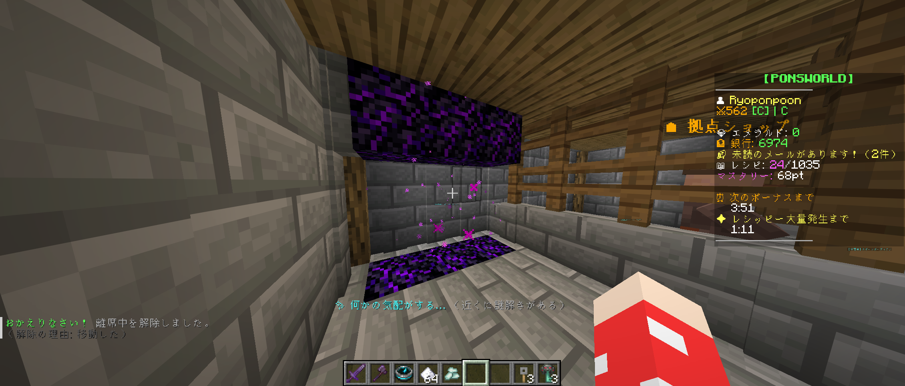
サーバーは毎日 15:00 と 0:00 に再起動します。直前になると、画面にカウントダウンが出ます。
第一章
この世界のお金はエメラルド。稼ぎ方と使い道を知っておこう。
エメラルドを預けておけます。お店などで支払うときは、手持ちのエメラルドが先、足りない分は銀行から自動で使われます。
スポーンにいる「総合ショップ」の人を右クリックすると、5つのお店が開きます。
| お店 | 売っているもの |
|---|---|
| 🧱 建材屋 | ブロック・松明・露店キット |
| 📚 本屋 | レシピ本・エンチャントの本 |
| ⛏ 道具屋 | 木の道具・革の防具・盾・弓矢・個人チェスト・📡流れ星レーダー |
| 💰 換金屋 | 素材を売って、エメラルドに換える |
| 🎁 ミステリーボックス屋 | ガチャのボックス・帰還の巻物・レシッピーのおやつ |
クリックで1回分、シフト＋クリックで10回分（換金屋は持っている分を全部）です。
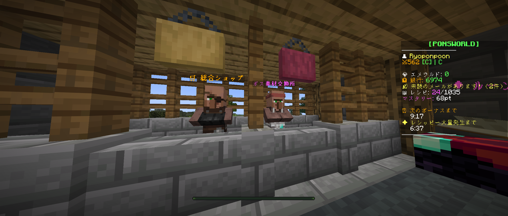
拠点Lv3以上の拠点には、1日に何回か行商人がやって来ます（30分滞在）。星片や琥珀など、珍しい品物を売っていることも。品物には数に限りがあります。
露店・カジノ・スロット・ボス素材交換所など、エメラルドを使う場所はほかにもたくさんあります。
第二章
冒険者の毎日は、小さな依頼の積み重ね。毎日のぞくと、確実に強くなれる。
/daily で開きます。毎日0時に、3つのミッションが決まります。
掲示板を右クリックすると、自分専用の依頼が6つ並びます。同時に3つまで受けられ、毎日0時に入れかわります（受けている依頼は残ります）。
依頼をこなすと「依頼ポイント（QP）」がたまり、依頼ランク E → D → C → B → A → S と上がっていきます。B・A・S に上がると称号がもらえます。ランクが上がるほど、難しくて報酬の多い依頼が出ます。
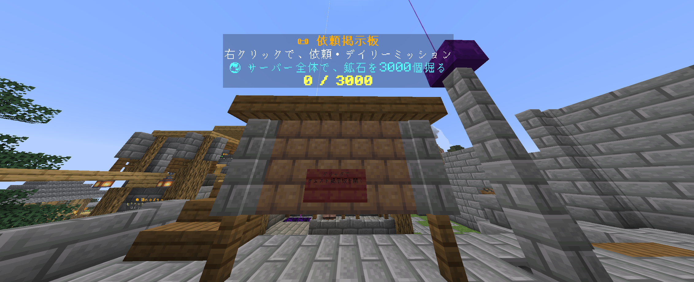
サーバー全員で、1つの大きな目標を目指します（例: 魔神の眷属を1000体倒す）。目標の1%以上を手伝った人全員に、エメラルド・ルーン・QPが届きます。
フィールドのあちこちに、謎解きが隠されています。近くに行くと、画面に「✨ 何かの気配がする…」と出て、宝箱の出る場所がキラキラ光ります。
| 謎解き | 解き方 |
|---|---|
| 🔥 かがり火を灯せ | 火打ち石で焚き火を右クリック。時間内に全部灯す |
| 🔢 順番の石碑 | ヒントを見て、正しい順番で石碑を右クリック |
| 🎵 音の記憶 | 鳴ったメロディと同じ順番で、音符ブロックを右クリック |
| ✨ 光の玉を集めろ | スタートを右クリック → 時間内に光の玉に全部触る |
| 🧚 導きの光を追え | 光の精霊に近づくと動き出す。ついていく |
| 🟩 床を全部光らせろ | 踏むと、その床ととなりの床の色が変わる。全部黄緑にする |
| 🧭 向きをそろえろ | 額縁の矢印を回して、全部同じ向きにする |
| ⚔ 封印を解け | スタートを右クリック → 現れた魔物を全部倒す |
| 📜 謎の石版 | 石版を右クリック → なぞなぞの答えを入力 |
| 🗿 隠された宝箱 | 見つけて右クリック |
| 宝箱 | 中身 |
|---|---|
| 普通の宝箱 | エメラルド20〜40 |
| 精巧な宝箱 | エメラルド60〜100・星屑や生活のレア素材が入っていることも |
| 貴重な宝箱 | エメラルド150〜250・鍛冶の素材・まれにルーン |
| 豪華な宝箱 | エメラルド400〜600・ルーン・まれに☀光の星片 |
謎解きは1人1日1回。豪華な宝箱の謎解きだけは、1人1回限りです。宝箱は解いた本人にしか開けられません。
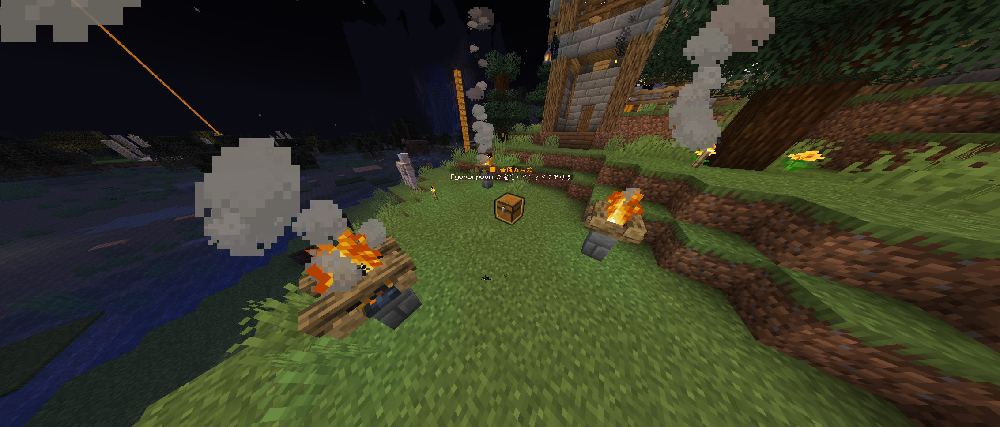
第三章
素材も、鍵も、名誉も、強敵の向こうにある。
押し寄せるモンスターを倒し、5つのウェーブを突破する素材ダンジョンです。
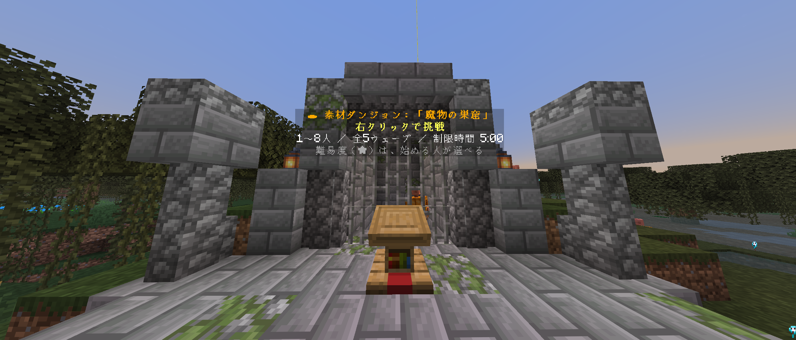
2分間、湧いてくる魔物を倒して宝物を集め、最後に鑑定して、価値の合計を全員で山分けする財宝ダンジョンです。
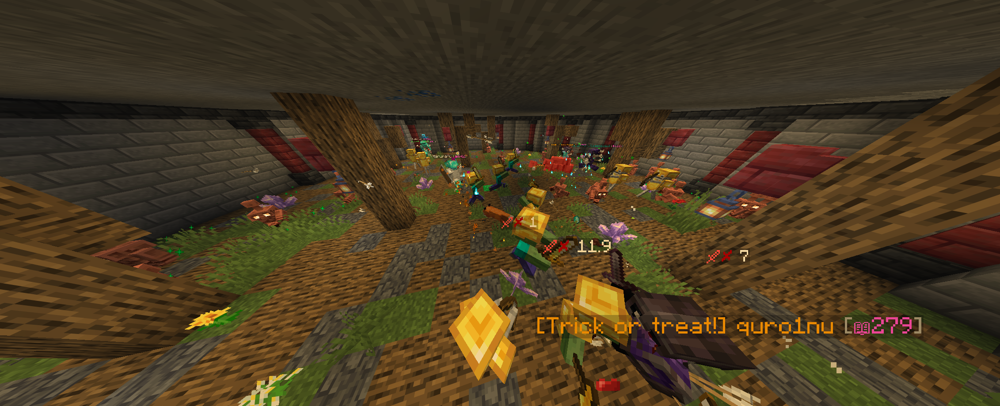
墓守の骸骨王・スライムキング・糸紡ぎの女王グモ など。ボスの祭壇で「フィールドボスパス」を使って参加します。ボスごとに、専用の武器・防具・称号・オーラが手に入ります。
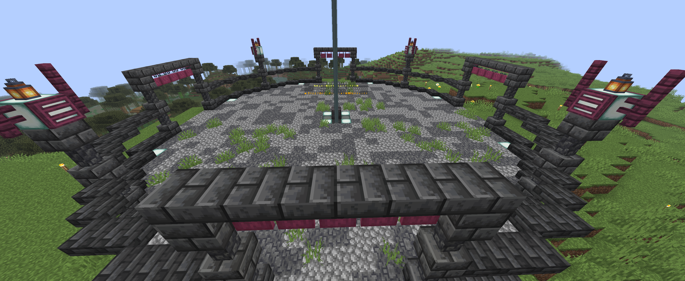
/party（/pt）で、最大8人のパーティーを組めます。
/pc でパーティーだけのチャット第四章
ただ殴るだけでは勝てない。見て、動いて、仲間と息を合わせる者だけが、勝利をつかむ。
部屋のまわりに出る「魔神の眷属」を倒してポイントをため、100ポイントで召喚台が目覚めます。
魔神はさまざまな技を繰り出してきます。どう戦うかは、その目で確かめよう。
報酬は「魔神の核」・ルーン・エメラルド（週1回のボーナスあり）。
5回・10回討伐で称号、25回でオーラ「魔神の残響」。/raidwins で討伐回数を確認できます。
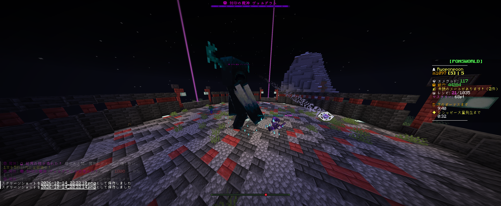
光の神官ルミナと、闇の剣士ノクス。2体同時に挑む、PONSWORLD 最難関のレイドボスです（2〜8人）。
ただ殴るだけでは、2体に勝つことはできません。光と闇の秘密を解き明かし、仲間と力を合わせて挑もう。
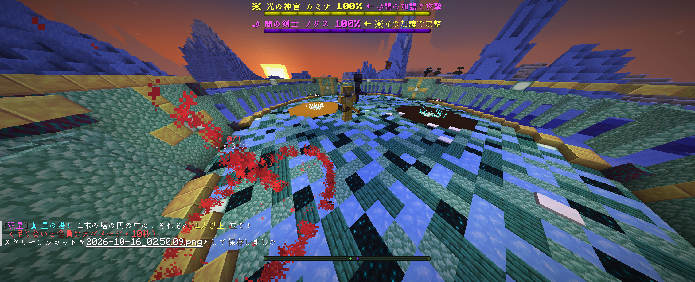
戦いの途中で倒れても、30秒で戦いに復帰できます。
報酬：エメラルド1500・ルーン×3（参加者全員）
☀光の祭壇に「☀光の星片」、🌙闇の祭壇に「🌙闇の星片」を、手に持って右クリックで捧げます（30秒以内に両方。1人でも2人でもOK）。儀式が成立すると60秒の参加受付が始まり、祭壇を右クリックで参加できます。
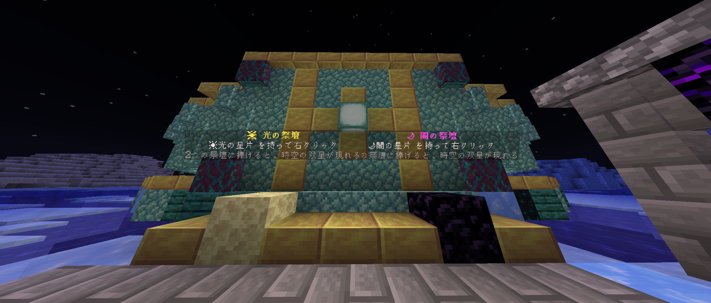
| 手に入れ方 | ☀光の星片 | 🌙闇の星片 |
|---|---|---|
| ⭐ 流れ星を拾う | 確定 | ― |
| 🌑 星屑×30 を錬金工房で錬金 | ― | 確定 |
| 👑 魔神ヴァルグラムの討伐 | ― | まれに |
| 💰 宝物庫で「伝説の宝玉」を鑑定 | まれに | ― |
| 🐉 フィールドボスの討伐 | ごくまれに | ごくまれに |
| 🗝 ダンジョンのクリア | ごくまれに | ごくまれに |
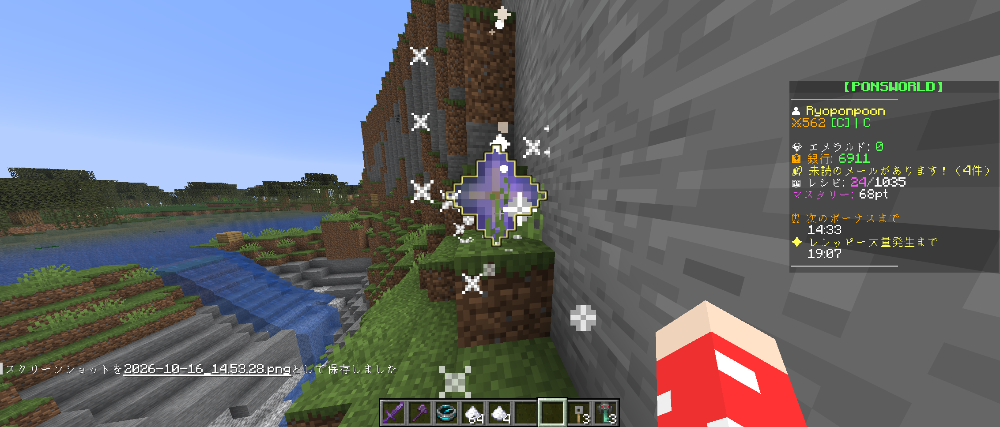
第五章
強敵に挑むなら、まずは武具から。鍛冶台は、冒険者のいちばんの味方だ。
[Lv.] の付いたモンスターから手に入る「魔物の骨」「硬い甲殻」「魔石」などで、剣・斧・防具4部位を作れます。
| 段階 | 主な素材 | 特徴 |
|---|---|---|
| 鍛鉄 | 魔物の骨 | 鉄より少し強い |
| 鋼 | 骨・硬い甲殻 | ダイヤと同じくらい |
| 魔鉱 | 硬い甲殻・魔石 | ダイヤとネザライトの間 |
| 巣窟 | 巣窟の欠片・核 | 防具4つでセット効果 |
| 魔神 | 魔神の核 | 最強。クオリティは必ず60%以上・ルーンスロット3つ |
作るたびにクオリティ（1〜100%）が決まります。粗悪品・普通品・良品・傑作の4ランクで、高いほど強く、強化できる上限も上がります（最大+10）。傑作が出ると全体にお知らせ！
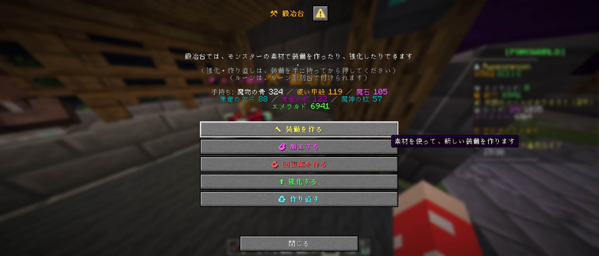
装備に彫り込んで、強さを足す石です。攻撃力・防御・体力・ドロップ率の4種類があり、それぞれにクオリティ（1〜100%）があります。全身で4つまで付けられます。
/runebox（/rbox）で、持っているルーンをまとめて管理・合成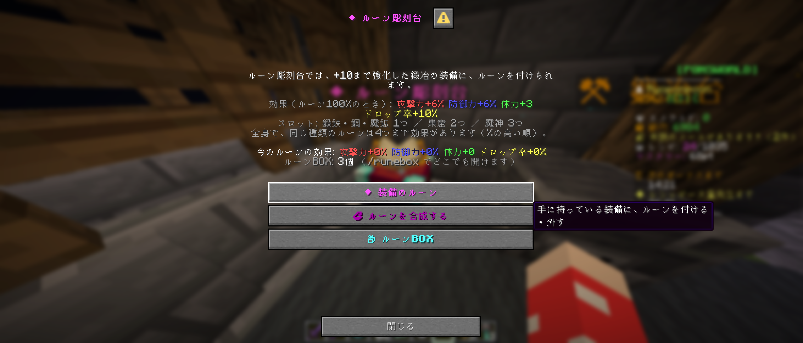
鍛冶台の「回復薬を作る」から作れます。飲むとすぐに、最大体力の 10%・25%・50%・75% を回復。すべての回復薬で共通、30秒に1回まで飲めます。
いろいろな遊びで称号が手に入ります。称号ブロックで付け替えると、チャットで名前の前に表示されます。
第六章
冒険の合間に帰る場所。畑を耕し、料理を作り、仲間と拠点を育てよう。
拠点ショップで「ベースコア」（エメラルド300）を買い、好きな場所に置くと、そこがあなたの拠点になります。土地は自動で保護されます。ベースコアを右クリックすると、拠点の設定が開きます。
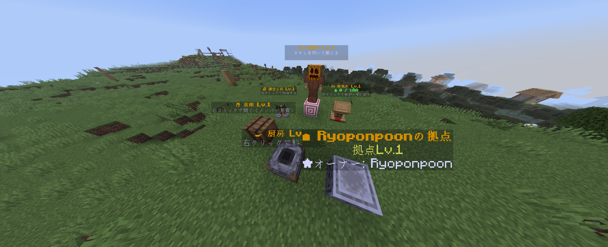
| 拠点Lv | 広さ | できるようになること |
|---|---|---|
| 1 | 1×1チャンク | 施設を置ける |
| 2 | 2×2チャンク | /home で拠点へテレポート |
| 3 | 3×3チャンク | 行商人が来る・施設が2つずつ |
| 4 | 3×3チャンク | 行商人が1日3回・施設が3つずつ |
拠点の強化は、メンバー全員で素材を少しずつ納めて行います。
農業・牧畜・釣り・伐採の4つのスキル（Lv1〜50）。/life で確認できます。
| 素材 | 手に入れ方（拠点の中で） |
|---|---|
| 黄金の小麦 | 実った作物を収穫する |
| 上質な羊毛 | 羊の毛を刈る |
| 濃厚ミルク | バケツで牛の乳をしぼる |
| 虹色の鱗 | 魚を釣る |
| 樹液・琥珀 | 原木を切る（琥珀はとてもレア） |
拠点ショップで買って、拠点の範囲の中に置きます。施設は、それぞれの画面からレベルを上げられます。
| 施設 | できること |
|---|---|
| 🍳 厨房 | 時間をかけて料理を作る。食べると攻撃力アップなどのバフ（1つだけ・/food で確認） |
| 📦 倉庫 | メンバー全員で使える共有の倉庫。中の素材は料理や強化にそのまま使える |
| ⚔ 訓練所 | かかしを叩いて、攻撃力・受けるダメージ・最大体力を少しずつ鍛える |
| ⚗ 錬金工房 | 生活の素材から、迷宮の鍵・宝物庫の鍵・鍛冶の素材・フィールドボスパス・🌙闇の星片を作る |
| 📜 研究所 | 拠点の研究（ドロップ率UP・/home の短縮 など）と、エメラルドの自動生成 |

| 料理 | 効果 |
|---|---|
| 力の焼き肉丼 | 攻撃力 +8%（30分） |
| 鉄壁のシチュー | 受けるダメージ -8%（30分） |
| 命のフィッシュパイ | 最大体力 +4（30分） |
| 職人の朝ごはん | 生活スキルの経験値 +25%（30分） |
| 虹色の海鮮丼 | 攻撃力 +12%（45分） |
| 💰 エメラルドパン | 宝物庫で、近くのお宝を自動で回収（3分） |
巻末
何から始めればいいか迷ったら、この順番で進んでみよう。
付録
よく使うコマンドをまとめました。
| コマンド | できること |
|---|---|
/daily | デイリーミッション |
/quest | 受けている依頼の状況 |
/party（/pt） | パーティーの画面 |
/pc | パーティーチャット |
/home | 拠点へテレポート（拠点Lv2〜） |
/home menu | 拠点の設定 |
/life | 生活スキル |
/food | 今の料理のバフと残り時間 |
/runebox（/rbox） | ルーンBOX |
/dkey | 迷宮の鍵の数・今日の無料入場 |
/tvkey | 宝物庫の鍵の数 |
/raidwins | 魔神の討伐回数 |
/basetut | 拠点チュートリアル |
/sidebar | サイドバーの表示・非表示 |